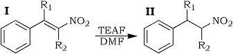

HTML by Rhodium
Selective reduction of carbon-carbon double bond conjugated with nitro group has been demonstrated with a number of examples by the use of the TEAF reagent (triethylamine-formic acid azeotrope) in N,N-dimethylformamide. In addition, formic acid reduction of carbon-carbon double bond conjugated with both sulfonyl and other electron-withdrawing groups has been exemplified by the same manner.
In several papers1,3 from this laboratory, it has been shown that the formic acid reduction provides a practical method effective for selective reduction of electron-deficient carbon-carbon double bonds. The formic acid reduction of carbon-carbon double bonds conjugated with carbonyl,3a cyano,1,3b nitro3b, and sulfonyl3b group have been informed previously, but the last two only in our short communication3b. We, therefore, wish to disclose in detail together with extensive studies.
Table I
Formic Acid Reductiona of β-Nitrostyrenes

Compd. |
R1 | R2 |
Temp.b |
Time |
Yieldc |
Ia |
H | H |
100-105°C |
4.5 h |
0%d |
Ib |
H |
CH3 | 120-122°C |
6.0 h |
70.0% |
Ic |
H | C2H5 | 115-120°C |
14.0 h |
83.5% |
Id |
H | CH2Ph | 114-116°C |
4.5 h |
26.5%e |
Ie |
H | Ph | 130-135°C |
28.0 h |
59.3% |
If |
Ph | H | 130-135°C |
8.0 h |
57.3% |
a) Substrate: 0.02 mol, DMF 40 mL,
TEAF: 5.2 g (0.06 mol as HCOOH).
b) Temp effecting considerable CO2 evolution.
c) Based on the product isolated.
d) Resulted in polymerization.
e) Starting material was recovered in 63.4% yields.
An attractive route for synthesis of nitroalkanes involves selective reduction of conjugated nitroalkenes, the method for which previously reported includes catalytic hydrogenation4 and reduction with complex metal hydrides such as sodium borohydride,5 lithium borohydride6 and sodium trimethoxyborohydride.6 Extensive investigation of formic acid reduction of conjugated alkenes has developed a successful procedure for selective reduction of the carbon-carbon double bonds of conjugated nitroalkenes.
Conjugated nitroalkenes were efficiently reduced to the corresponding nitroalkanes by the use of the formic acid-triethylamine azeotrope (TEAF reagent7) in N,N-dimethylformamide (DMF) at 100-135�. The results of reduction of a number of nitrostyrenes are summarized in Table I. The failure of unsubstituted β-nitrostyrene to undergo the reduction is attributed to its polymerization. As previously known,8 α,β-unsaturated nitroalkenes are susceptible to the base-catalyzed polymerization. The reduction in such basic medium is accompanied by the competing polymerization which, as illustrated in Table I, apparently depends on steric influence of the olefinic substituents.
In extensive studies, 3,6-dinitrocoumarin (III) was reduced at room temperature to give 2-(2-nitroethyl)-4-nitrophenol (IV) in 37% yield. Process of this reaction may involve hydrolysis and successive decarboxylation after the reduction of the 3,4-double bond. 2,4-Dinitrostilbene did not undergo the reduction, whereas α-(p-nitrophenyl)cinnamonitrile (V) was reduced at 90-91�C to give α-(p-nitrophenyl-β-phenylpropionitrile (VI) in 73% yield.
Nature of electron-withdrawing group, with which carbon-carbon double bond is conjugated, is responsible for reactivity for the formic acid reduction. As reported previously,3b effect of the electron-withdrawing groups is in the order; NO2>CN>SO2C6H5>COC6H5. Carbon-carbon double bonds conjugated with a nitro group can undergo the formic acid reduction; as indicated in the foregoing. However, groups such as cyano, sulfonyl, carbonyl and ethoxycarbonyl are not so efficient that carbon-carbon double bonds effective for the reduction have been recognized to be conjugated doubly with them at one side of the olefinic carbons.
Further experiments included an examination of the formic acid reduction of a series of alkenes conjugated with sulfonyl group. Results are summarized in Table II. β-Phenylsulfonylstyrene was inert to the reduction even at 150�C, whereas styrenes conjugated with both sulfonyl and other electron-withdrawing group underwent the reduction to give the corresponding reduction products. β,β-bis-(phenylsulfonyl)styrene was reduced to 1-phenylthio-1-phenylsulfonyl-2-phenylethane, where one of the phenylsulfonyl grouping was reduced to phenylthio grouping.
Conjugated Nitroalkenes
Compounds Ia-d, were prepared by condensation of the corresponding nitroalkanes and benzaldehyde in acetic acid using ammonium acetate as catalyst. Compounds, Ie and If, were prepared by nitration of stilbene and 1,1-diphenylethylene, respectively, with acetyl nitrate. Compounds III and IV, and 2,4-dinitrostilbene were prepared according to the method described in the literatures cited.
Ia: Yellow needles (EtOH), mp 57-58�C (lit.10 mp 58-59�C); Ib: Yellow needles (EtOH), mp 64�C (lit.10 mp 64-65�C) ; Ic: Yellow oil. bp 95-102�C (0.05 mmHg); Id: Yellow crystals (MeOH), mp 57� (lit.11 mp 58�C; Ie: Yellow needles (hexane), mp 71-72�C (lit.12 mp 72-73�C); If: Yellow prisms (ligroin-benzene), mp 85-87�C (lit.13 mp 88-88.5�C); III: Yellow plates, (AcOH), mp 178-180�C (lit.14 mp 180-181�C); V: Yellow needles (EtOH), mp 175-176�C (lit.15 mp 175-176�C); 2,4-dinitrostilbene: Yellow prisms (AcOH), mp 137-138�C (lit.16 mp 138�C).
Formic Acid Reduction of β-Nitrostyrenes Ia-f (Table I).
Table III
Physical Data of the Reduction Products
Compd. |
R1 | R2 | Appearance (Recryst. solvent) |
mp/bp (�C/mmHg) |
IIb |
H | CH2 | Liquid | 85-95/0.45 |
IIc |
H | C2H5 | Liquid | 85-400/0.3 |
IId |
H | CH2Ph |
Needles (EtOH) | 102.5-103.5 |
IIe |
H | Ph | Liquid | 120-124/0.04 |
IIf |
Ph | H |
Prisms (EtOH) |
70-71 |
A mixture of 0.02 mol of Ia-f and 5.2 g (0.06 mol based on HCOOH) of TEAF in 40 m1 of DMF was stirred at appropriate temperature. Dry air free from CO2 was introduced in order to check evolution of CO2 by saturated Ba(OH)2 solution. After CO2 evolution almost ceased, DMF and excess TEAF were distilled off under reduced pressure. The residue was dissolved in benzene. The benzene solution was washed with water and dried over anhyd. MgSO4. Evaporation of benzene under reduced pressure gave the crude reduction product. Recrystallization or distillation under reduced pressure gave pure reduction product. In the run with If, the product was purified by passing through a basic alumina column using benzene-ethyl acetate as an eluent. Physical data of the reduction products are summarized in Table III.
Formic Acid Reduction of 3,6-Dinitrocoumarin (III).
To a solution of 1.4 g (0.006 mol) of III, 1.56 g (0.018 mol based on HCOOH) of TEAF was added at room temperature with stirring. Evolution of CO2 almost ceased after 2 hr. DMF and excess TEAF were distilled off under reduced pressure. The residual oil was dissolved in benzene and the benzene solution was washed with water and dried over anhyd. MgSO4. After evaporation of benzene, the resulting oily material was chromatographed on silica gel column using benzene-ethyl acetate 100:1 as an eluent, to give 0.48 g (37%) of IV as yellow powder, mp 133-135�C.